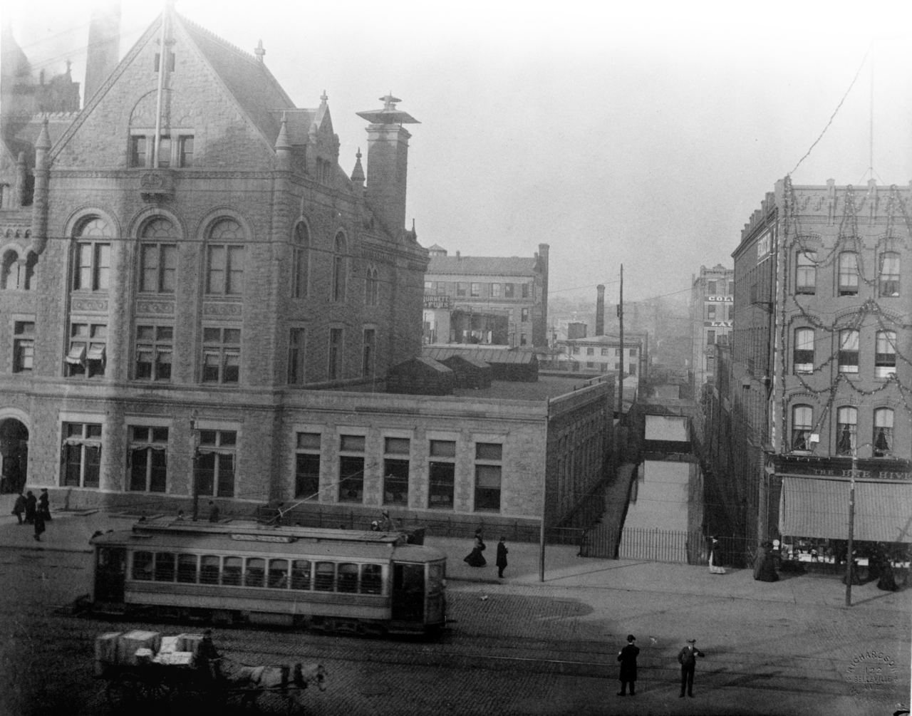
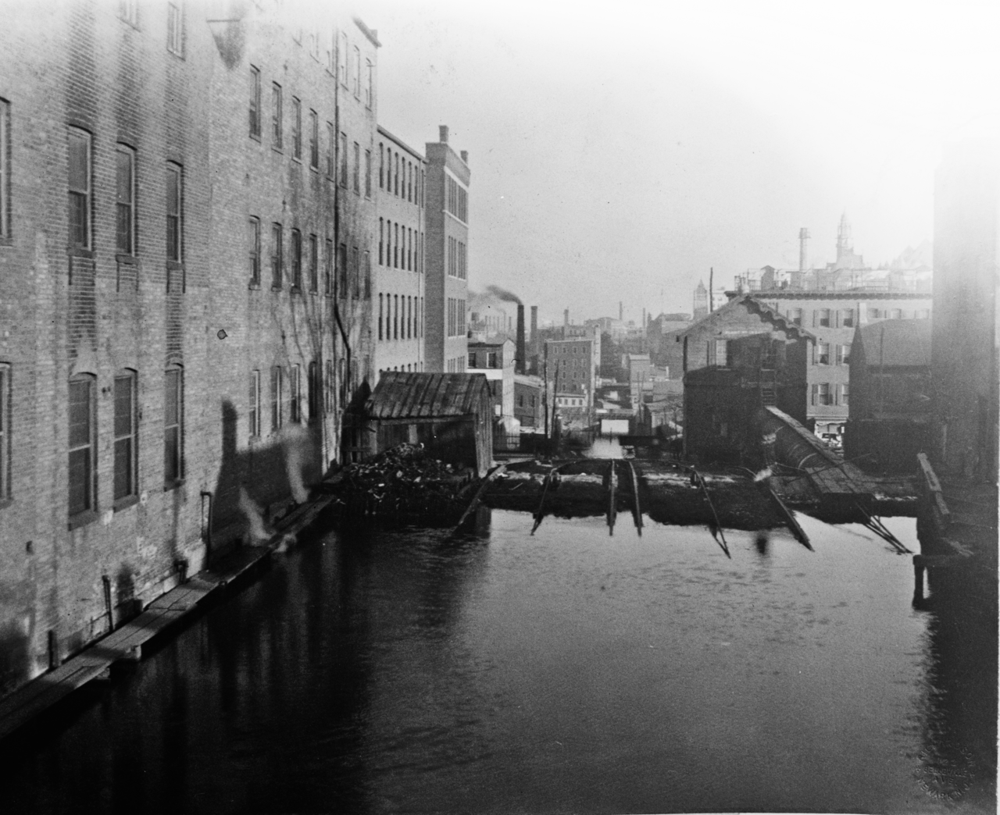

Chartered to Cross Northern New Jersey

Before steel rails crossed the state, industrialists needed an economical way to haul Pennsylvania anthracite coal from the Delaware River at Phillipsburg to the factories of Newark and the ports of New York Harbor. On December 31, 1824, the New Jersey Legislature chartered the Morris Canal and Banking Company—including a decisive 99-year clause allowing the State of New Jersey to reclaim the property in 1924.
Constructed between 1825 and 1837, the waterway stretched over 100 miles across northern New Jersey's steep ridges and valleys. Rather than relying solely on slow water locks to climb hundreds of feet of elevation, canal engineers built water-powered inclined planes: timber-and-iron railways that lifted hinged canal boats in wheeled cradles up and down hillsides.
Newark's Engineering Landmarks: Planes 11 & 12 East
Descending from the Watchung foothills into the Passaic River basin required dramatic engineering directly inside Newark. Two major inclined planes defined the local alignment that modern light rail riders still traverse:
- Plane 12 East (High Street / MLK Jr. Blvd to Plane Street): One of the best-documented structures in Newark's industrial history, Plane 12 East carried boats between the upper level near High Street (now Dr. Martin Luther King Jr. Boulevard) and the lower downtown basin toward Broad Street. Water diverted from the upper canal drove hydraulic turbines inside the stone power house at the head of the plane.
- Plane 11 East (Bloomfield / North Newark Corridor): Positioned north of the city core toward Bloomfield, Plane 11 East stepped boats down into the Branch Brook corridor—the very grade later followed by North Newark's City Subway trench.
- Orange Street Electric Plane (1903): Late in the canal's operating life, electric haulage equipment was introduced at Orange Street in an effort to keep freight moving against rail competition.

Decline, Drainage, and Municipal Reuse (1924–1927)
By the turn of the twentieth century, parallel steam railroads carried heavier loads at far higher speeds year-round, unhindered by winter ice. Traffic on the Morris Canal slowed to a trickle, leaving a stagnant, odor-prone waterway cutting straight across booming downtown Newark streets.
When the company's 99-year charter expired, New Jersey authorized official abandonment in 1924. Rather than simply backfilling the entire channel with rubble, Newark municipal planners recognized an irreplaceable asset: a continuous, grade-separated corridor connecting downtown near Broad Street to the northern neighborhoods. Between 1924 and 1927, the canal was drained and dismantled, and the City of Newark acquired the urban bed to build Raymond Boulevard on the surface while reserving the trench underneath for electric streetcars.